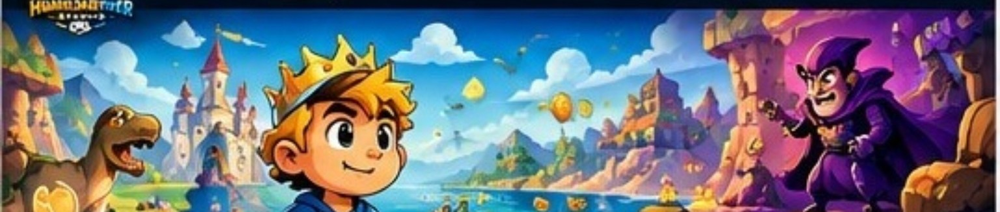
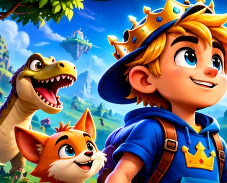
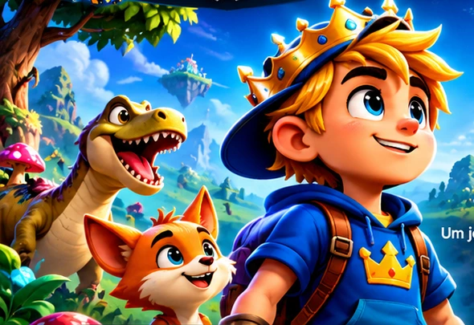
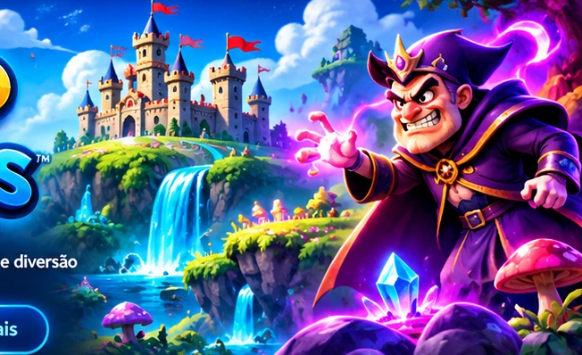

Floresta dos Tropeções
Tronco Zangado

Uma aventura de plataformas 2D cheia de imaginação, desafios e diversão para toda a família.
Em desenvolvimentoUma aventura de coragem, perguntas e alegria através de seis mundos encantados.

Houve um tempo em que o Reino das Gargalhadas ria do nascer ao pôr do sol. O castelo erguia-se sobre um monte de cascatas, entre ilhas flutuantes e Blocos Gargalhada — cubos dourados de sorriso contagiante.
Numa noite escura, o Rei Rabugento roubou a Grande Gargalhada, o bloco mais luminoso de todos, e trancou-a na sua fortaleza. Sem ela, o reino ficou cinzento e silencioso.
Mas há alguém que nunca deixa de perguntar «Porquê?». De mochila às costas e camisola azul, O Curioso parte sozinho para recuperar a alegria perdida.
Conhecer os desafiosEm cada mundo, um chefe diferente coloca à prova a coragem do Curioso.
Tronco Zangado
Faraó Mumificado
Cavaleiro Fantasma
Golem de Lava
Nuvem Trovão
Bobo-Rei e Rei Rabugento
Caracóis, gosmas, cogumelos, abelhas, escorpiões, fantasmas-vela, diabinhos, nuvens de chuva e palhaços: inimigos divertidos, sem sustos exagerados.
Leviatã · Rainha das Sombras · Senhor do Gelo · Mini-Rei
Quando O Curioso recuperar a Grande Gargalhada, o reino poderá voltar a sorrir.
O nosso primeiro jogo está em desenvolvimento. As restantes categorias receberão aplicações futuramente.
Explora mundos fantásticos, recolhe moedas, encontra segredos e enfrenta desafios únicos.

O Curioso percorre mundos surpreendentes, com personagens divertidas, inimigos, colecionáveis e muitas surpresas.
Os nomes e conteúdos representam o universo planeado e podem evoluir durante o desenvolvimento.
Seleciona um mundo para conhecer o seu ambiente e desafios.

Um rapaz loiro, de camisola azul e mochila, que nunca deixa de perguntar «Porquê?».

Um rei de barba cinzenta, coroa dourada e capa roxa que roubou a Grande Gargalhada.
Arte promocional e imagens ilustrativas do universo do jogo; não representam necessariamente capturas da versão jogável.
Ideias em desenvolvimento; a disponibilidade final poderá mudar.
Eventos temáticos planeados
Desafios sazonais planeados
Modo especial em preparação
A Humildadever Studio continua a preparar o universo de O Curioso. Acompanha esta página para futuras atualizações oficiais.
Data de lançamento ainda não anunciada.Informações e materiais promocionais para imprensa, criadores de conteúdo e parceiros.
Estúdio: Humildadever Studio
Género: Plataformas 2D
Plataforma: Android
Estado: Em desenvolvimento
Lançamento: Por anunciar
Descarrega o conjunto de imagens promocionais e informações do jogo.
Descarregar press kitContacto de imprensaUm estúdio independente que cria videojogos e aplicações para promover diversão, criatividade e aprendizagem.
A nossa visão é desenvolver um universo de experiências digitais originais, começando por O Curioso.
Sugestões, colaborações e propostas são bem-vindas.
Queres saber quando houver novidades? Pede para receber atualizações por e-mail. O envio automático de newsletters ainda não está ativo.
Pedir novidades por e-mailA inscrição automática só ficará disponível após ligar um fornecedor de newsletters e configurar o consentimento.
As contas oficiais serão adicionadas quando estiverem disponíveis.


As páginas oficiais serão ligadas quando forem criadas e confirmadas. Não existem links fictícios.